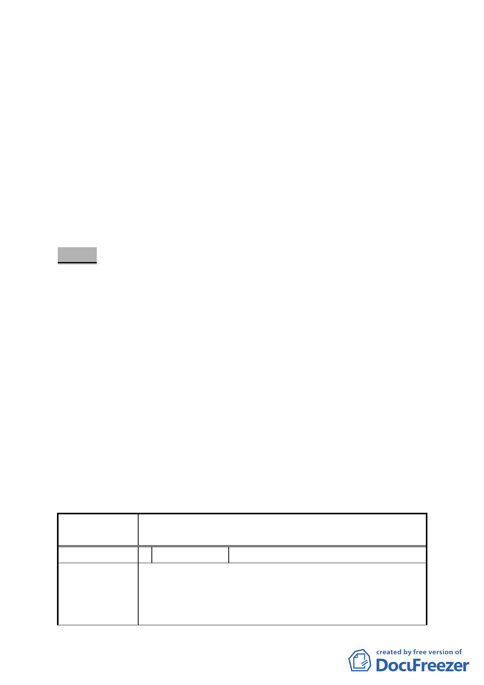

內容變更，考量資訊公開並求程序周延，請市府於細
部計畫公告發布實施前，先就該等本會審議通過之變
更內容，再辦理公開展覽及說明會，公開展覽期間如
無陳情意見或陳情意見與該等變更內容無關者，則由
市府逕行公告發布實施。
三、法令依據：都市計畫法第 22 條。
四、擬定申請單位：臺北市政府
五、本案審議歷程：市府（都市發展局）於 99 年 5 月 5 日以府都
規字第 09931333700 號公告，99 年 5 月 6 日起公開展覽 30
天。
六、公民或團體所提意見：共 4 件。
決議：
一、 本 案依市府 公展計 畫書圖及 本次所 送補充會 議資料 修正通
過。
二、 有關民眾陳情內容涉及區段徵收住宅配地可否分區抽籤分配
發回，市民住宅設計公設比例、房型型式等，與本次所提調
整 4 個方案內容無關，會後請土地開發總隊在符合土地徵收
相關法令規定之程序下協助地區居民尋求可行之方案，並向
地區居民妥於說明區段徵收之權利義務關係，避免民眾疑
慮。至於所提分配後之容積率、建蔽率太低是否可調整一項，
對本次所提調整 4 個方案內容並無影響，後續由市府另案研
議。
三、 公民或團體所提意見審決如後附綜理表。
臺北市都市計畫委員會公民或團體所提意見綜理表
案
名
「擬定北投士林科技園區（區段徵收範圍）細部
計畫案」內市民住宅區等 4 處調整案
編 號 1 陳情人 賴進成、林敬賢、林敬修、賴雅雅
1. 市民住宅太小。
陳情理由
2. 市民住宅抽籤。
3. 市民住宅面積小，使用不夠。收那麼多不然還我吧。
4. 抵地之建蔽率太低。
- 12 -